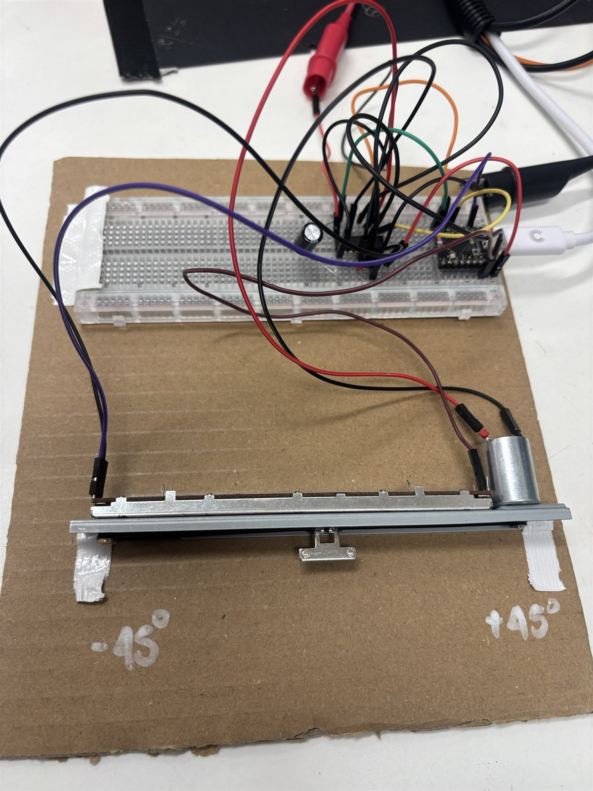
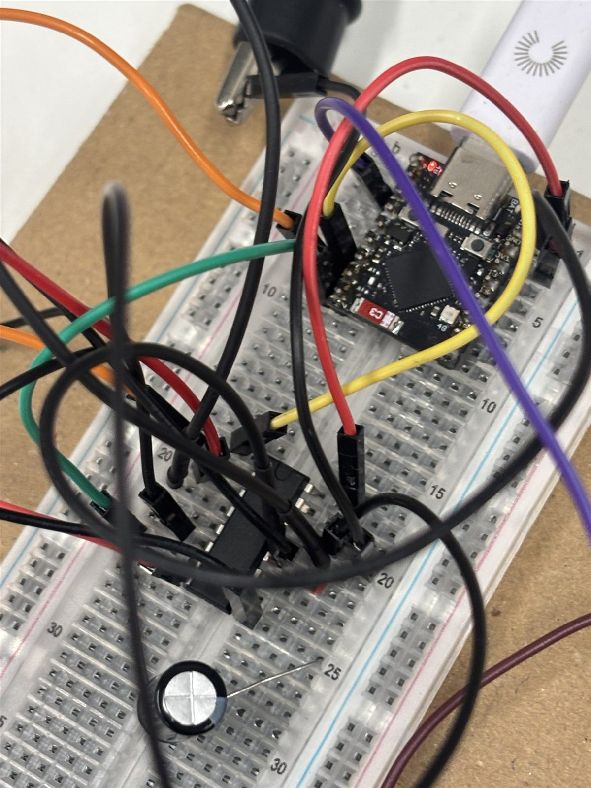
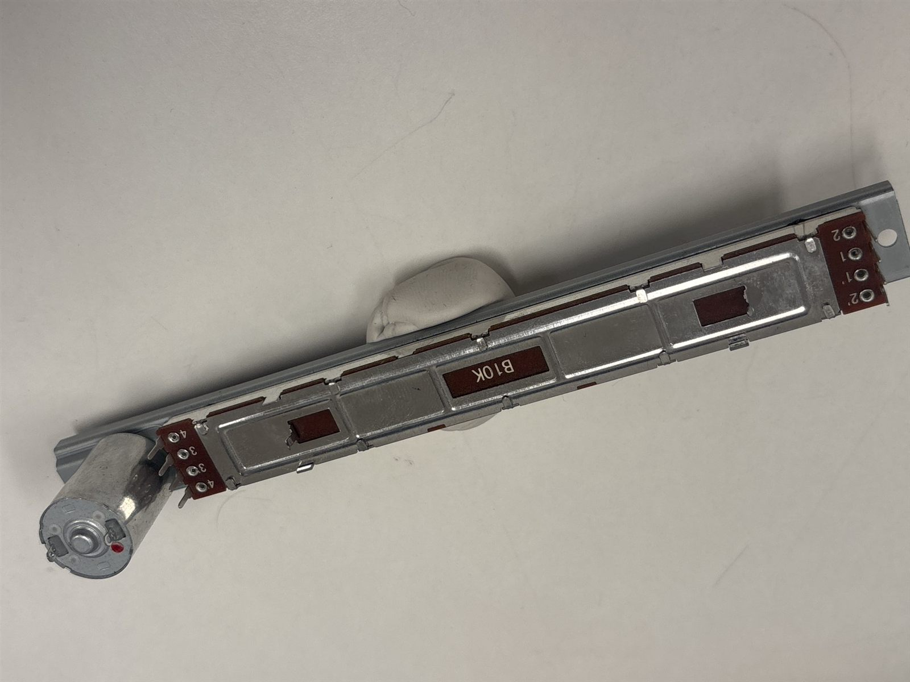

Back to the first needle · homeostat-arm on GitHub
TL's needle: a motorised fader
Unit TL of the simulated homeostat, given a body. A motorised slide fader, the cheapest one on offer, follows TL's red needle as the model runs; take hold of it and it lets go of its motor and becomes the needle, holding TL wherever the hand puts it. Built on 23 November 2026 from that fader, an L293D from the parts drawer and an ESP32-S3 SuperMini. This page records what was built, what went wrong on the way, and what it does now.
Within about 2° when TL drifts, about 6° behind when TL swings fast. The sim sends TL 20 times a second; the fader smooths that staircase into a glide.
Push it 4° or more off where it should be and hold it there: within 0.15 s it goes slack and TL follows the hand. Let go, and TL carries on from there.
Almost every failure on the way was a wire: a ground on a motor output, a capacitor across the motor and the wiper, a ground that worked loose. The firmware now guards against each of them.
On the bench



What we did
- Read the fader. Its only markings: B10K (a 10 kΩ linear track), two motor tabs, and pins 2 1 1′ 2′ at one end, 4 3 3′ 4′ at the other. The primes mark a second, identical track. Pins 1 and 3 are the ends of track one, 2 its wiper. Nothing senses touch.
- Chose a driver from the drawer. The motor is a plain two-wire DC motor that has to go both ways, so it needs an H-bridge. On hand: an L293D (does it, loses about 2 V), a 4N35 optocoupler and a 74HC595 shift register (neither drives a motor), an HW-687 MOSFET board (one direction only) and, found later, an A4988 (steppers only).
- First sketch, first fault. Sliding by hand read 0 to 84 of 4095. The wires were on the wrong pins of the track; moved to 1–3, the reading swept 0 to 4081, smooth and even.
- The motor would only go one way. L293D pin 6, one of the motor outputs, was also jumpered to ground. With it held low the motor could be driven towards 0 but never back.
- Brownouts. On the SuperMini's own USB 5 V, each push of the motor sagged the supply until the S3 reset (
Brownout detector was triggered). The motor got its own supply on L293D pin 8: first 5 V, then 9.24 V. - Readings that swung with the motor. With the slider standing still, the reading jumped about 1,300 counts one way or the other depending on drive direction. A capacitor sat between the motor output and the wiper line, coupling the 20 kHz drive straight into the reading. Moved across the motor supply, where it belonged.
- Tuned it to move gently. At 20 kHz the L293D can't switch cleanly enough: the slider needed 75% power to move at all, so it could only lurch. At 500 Hz it creeps at 25%. Speed-controlled moves (a setpoint that glides to the target) then landed within about 10 counts in 1–2 s, at the cost of an audible hum.
- Joined it to the simulator. The campus Wi-Fi won't take an ESP32, so the fader talks USB serial to the layout editor that serves the simulator, and the page reaches it through the editor (Fig. 2). TL's needle drives it; a hand on it holds TL.
- A loose ground. Touching the fader made it slam about; then it stopped dead, reading 4095 at the ground end. Fader pin 1 had worked off its ground. Reseated, it slammed to the far end chasing the reading it had believed. Added guards: a jump no slider could make is ignored, a reading stuck at an end while TL is elsewhere stops the motor, and so does pushing without moving.
- Ground bounce. Near the ground end the reading flipped between 0 and about 340 many times a second: motor current pulsing through the shared ground. Each reading is now 16 samples spread over one 2 ms motor pulse, which averages it out.
- Two homeostats, one fader. Every open copy of the simulator runs its own homeostat, so the fader was following one page while we watched another. One page drives it at a time now: ticking the box claims it, and any other page lets go and says so.
- Smoothed the following. TL arrives in 20 Hz steps and the fader lurched from step to step. It now smooths TL over 0.1 s, steers by TL's speed, aims ahead to win back the lag, and pushes more gently once moving. Direction reversals on a test sine fell from 81 to 18 (Fig. 3).
What went wrong, and what it looked like
For the next fader. Most of these look like a software problem from the outside.
| What it did | Cause | Fix |
|---|---|---|
| Hand slide reads only 0–84 | Wires on the wrong track pins | Track ends on 1 and 3, wiper on 2; the primed pins left alone |
| Moves towards 0 only, hard | L293D pin 6 (motor output) also jumpered to ground | Pin 6 to the motor and nothing else |
| Board restarts mid-move | Motor on the SuperMini's USB 5 V | Motor supply of its own on pin 8, grounds joined |
| Reading swings ±1,300 with drive direction, slider still | Capacitor between motor output (pin 3) and the wiper | Electrolytic across pin 8 and GND; the wiper gets nothing but its wire |
| Won't move at 60% power | 5 V minus the L293D's 2 V, then capped | 9 V motor supply, full power available |
| Slams about when touched, then reads 4095 at the ground end | Fader pin 1's ground working loose | Reseated; firmware ignores impossible jumps and stops on a stuck reading |
| Reading flips 0 ↔ 340 near the ground end | Motor current in the fader's ground | Readings averaged over a PWM period; pin 1 should have its own wire to GND |
| Fader “not in sync” with the sim | Following a different open copy of the sim | One page drives at a time, the others say so |
| Jittery following | 20 Hz steps, a hard minimum push | Smoothing, speed feed-forward, lighter push when moving |
Fig. 1: The wiring
Power and ground are drawn as labels: every GND is one net and every 5V another, joined at the SuperMini. The motor's 9 V touches only L293D pin 8. Crossing lines without a dot don't connect.
| From | To | Note |
|---|---|---|
| Fader 3, 1, 2 | 3V3, GND, GPIO1 | Pin 1 on its own wire to a SuperMini GND pin, away from motor current |
| L293D 1, 2, 7 | GPIO5, GPIO6, GPIO7 | EN takes the PWM; the inputs set direction (both high = brake) |
| L293D 3, 6 | Motor tabs | Nothing else on these two pins |
| L293D 16 / 8 | SuperMini 5V / 9 V supply + | Logic and motor supplies kept apart |
| L293D 4, 5, 12, 13, 9 | GND | Pin 9 off disables the unused second channel |
Fig. 2: How it joins the simulator
The simulator runs in the browser. The fader is on USB to the machine running the layout editor, which already serves the simulator page, so the page talks to the fader through it.
Fig. 3: What it does
Following
A test sine, 30° either way over 4 s, sent 20 times a second as the simulator sends TL. A direction reversal is the fader changing direction by more than 0.3°; the sine itself reverses 5 times in the run.
| Firmware | Reversals | Jitter | Behind TL |
|---|---|---|---|
| Steering straight at each 20 Hz step | 81 | 3.39 | 3.0° |
| TL smoothed over 0.1 s | 10 | 1.26 | 9.2° |
| Smoothed, aiming ahead by TL's speed (now) | 18 | 1.25 | 6.1° |
Jitter is the mean second difference of the fader's angle between samples: lower is smoother. With TL drifting slowly, the fader stayed within about 2°.
The hand
- Four test grabs: each detected after a push of 8–14° (337–552 counts), within 0.15 s.
- Released after 0.7 s of the slider standing still; TL then carried on from where the hand left it.
- The test is distance, not speed: more than 4° off and winning back less than 1.5° in 0.15 s. Speed alone was too jittery under the 500 Hz drive to stay below a threshold for long.
Why these parts
| Option | Verdict |
|---|---|
| L293D | Used. Two-way and forgiving, with its kickback diodes built in. Loses about 2 V, and switches too slowly to drive gently at inaudible frequencies, hence the 500 Hz hum. |
| TB6612FNG, DRV8833 | Better: MOSFET bridges, about 0.2 V lost, clean at 20 kHz, so slow, smooth and silent. Not in the drawer. |
| A4988 | No. A stepper driver: it sequences current through two coils from step and direction pulses, and can't hold a two-wire motor steadily one way. |
| HW-687 (555 and a MOSFET) | No. Switches one side of the motor only, so one direction; speed set by its own knob. Good for lamps, fans, pumps. |
| 4N35, 74HC595 | Not drivers. An optocoupler and a shift register: kept for isolating a signal, or more outputs when there are more faders. |
Firmware
All in homeostat-arm/ in this repository, for an ESP32-S3 SuperMini with USB CDC on boot (esp32 core 3.x).
| File | What it does |
|---|---|
fader/homeostat_fader | The fader as TL: follows a streamed angle, detects a hand, guards against bad wiring. Version from git on its first serial line |
fader/flash.ps1 | Writes the version from git, compiles, uploads, shows the boot line |
arm/fader.py | USB-serial bridge in the layout editor; one page drives at a time |
arm/fader.html | The fader on its own page: dial, a slider to drive it, a 20 s trace |
fader/bench v1.0–1.9 | Bring-up: wiring checks, jog and hold commands for metering, live tuning of gains, power floor and PWM frequency |
Parts
| Part | Source |
|---|---|
| Motorised slide fader, B10K dual track | Bought, the cheapest on offer |
| ESP32-S3 SuperMini | Bought new, about $4 |
| L293D | Parts drawer |
| 9 V supply, electrolytic capacitor, jumper wire | On hand |
Next
- Solder the three fader wires, with pin 1 on its own wire to the SuperMini's GND.
- Swap the L293D for a TB6612FNG or DRV8833 to lose the hum; the firmware already has the option.
- Plug it into armster, so it works from the simulator there too (armster needs
pyserial). - Three more faders for TR, BR and BL, and the whole homeostat can be held, nudged and felt by hand.
Recorded with the fader on firmware 0c9cf40 · 23 Nov 14:19.